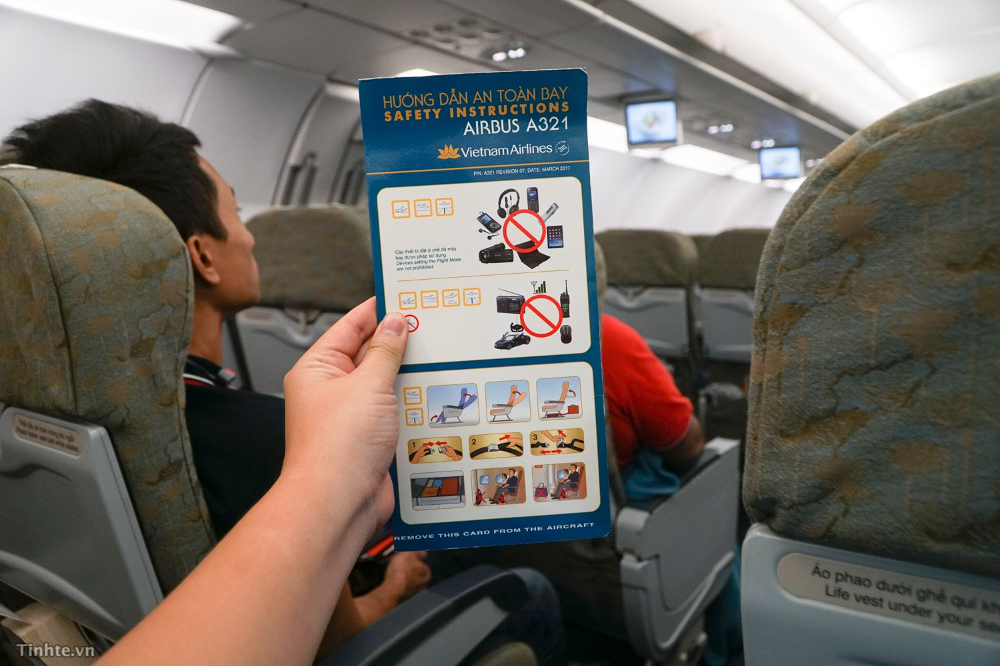
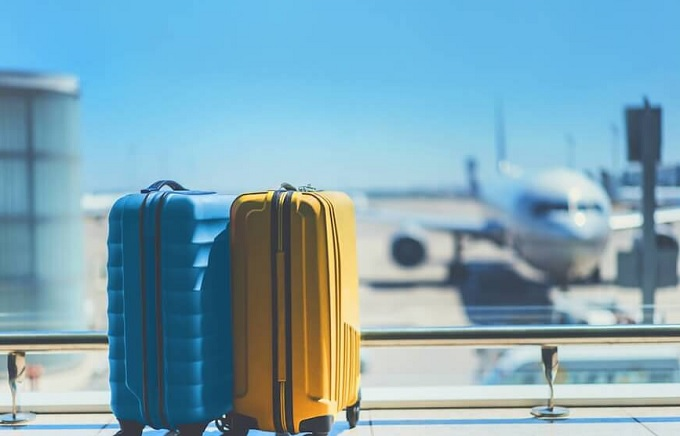
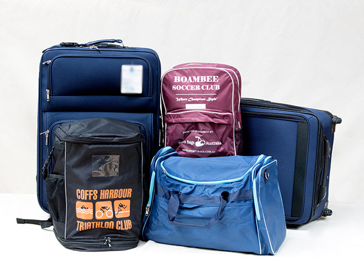
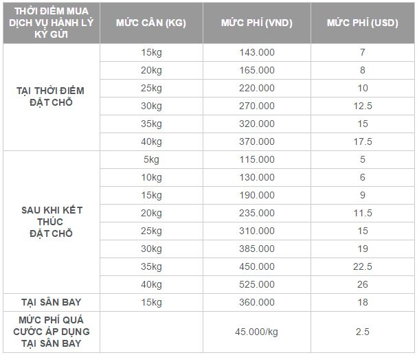
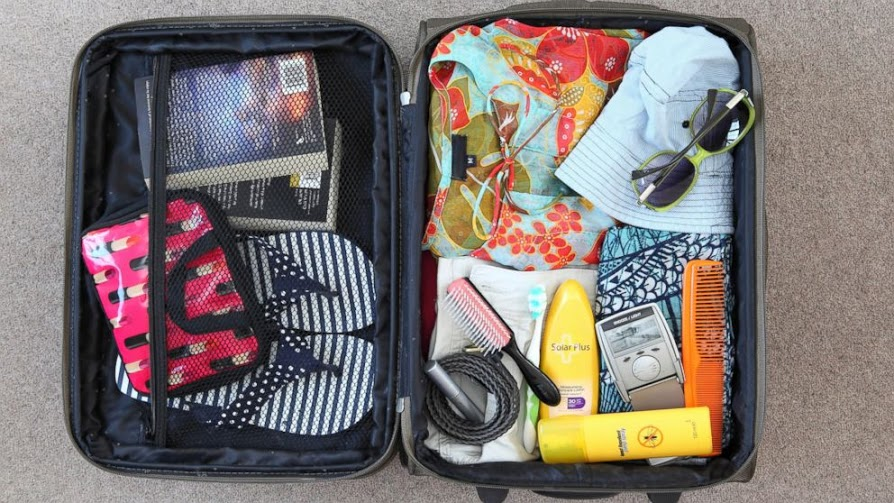
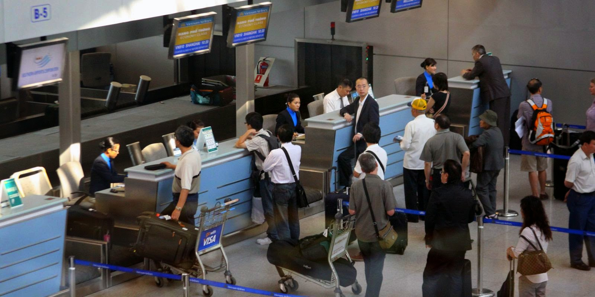

1. Những giấy tờ cần thiết
Khi làm thủ tục tại quầy check-in để lên máy bay, bạn cần có: vé máy bay (code vé), chứng minh thư nhân dân hoặc hộ chiếu (nếu bay chuyến quốc tế).
Nếu bạn không có chứng minh thư nhân dân thì có thể thay thế bằng những loại giấy tờ sau:
- Chứng minh của các lực lượng vũ trang
- Thẻ Đại biểu Quốc hội
- Thẻ Đảng viên
- Thẻ Nhà báo
- Giấy phép lái xe
- Thẻ Kiểm soát an ninh hàng không
- Thẻ nhận dạng của các Hãng hàng không Việt Nam
- Giấy chứng nhận nhân thân có xác nhận của Công an phường, xã nơi cư trú

2. Tiêu chuẩn về hành lý xách tay
Vietnam Airlines
Đối với hành khách đi hạng Thương gia, hành khách được phép mang 02 kiện hành lý xách tay,
hành khách ghế hạng Phổ thông được phép mang 01 kiện hành lý xách tay. Mỗi kiện hành lý xách tay có trọng lượng không vượt quá 7 kg
và có tổng kích thước ba chiều không vượt quá 115cm (56 x 36 x 23 cm).
Vietjet Air
Mỗi hành khách (ngoại trừ em bé) được phép mang 01 kiện hành lý xách tay chính và 01 kiện hành lý xách tay nhỏ với tổng trọng lượng tối đa không vượt quá 07kg
Jetstar
Hành lý xách tay (hoặc hành lý trên khoang Thương gia) phải vừa với ngăn để đồ phía trên đầu và mỗi món đồ
không được lớn hơn 56cm (cao) x 36cm (rộng) x 23cm (sâu).
Kiện nhỏ phải vừa với khoảng trống dưới ghế phía trước
Tổng trọng lượng là 7kg

3. Hành lý ký gửi
Quy định về hành lý ký gửi của các hãng hàng không nội địa như sau:
Vietnam Airlines:
Hành lý ký gửi được miễn cước:
Mỗi hành trình bay, hãng Vietnam Airlines có những quy chế khác nhau về mức hành lý ký gửi miễn cước. Cụ thể như sau:
+ Hành trình giữa Việt Nam và Nhật Bản
+ Hành trình giữa Việt Nam và Châu Mỹ
Lưu ý:
+ Đối với trẻ nhỏ dưới 2 tuổi, Vietnam Airlines có quy chế riêng về hành lý như sau:
Các chuyến bay đến châu Mỹ: Được phép mang 1 kiện hành lý có trọng lượng không vượt quá 23 kg.
Các lộ trình khác: được phép mang 10kg hành lý và một xe đẩy có thể gập lại được.
+ Hành lý miễn cước cho khách thuyền viên tối đa là 40kg.
Hành lý ký gửi có tính cước:
Nhằm tạo điều kiện cho khách hàng có được quy trình làm thủ tục đơn giản thuận tiện, hãng Vietnam Airlines chấp nhận cho hành khách mua trước hành lý.
Với các lộ trình trong nước, hành khách có thể mua từ 80.000 đến 150.000 đồng cho gói hành lý 5 kg.
Còn với các lộ trình quốc tế, cước phí cho hành lý trả trước có giá từ 10 USD – 40 USD/1 gói 5 kg.

VietJet Air
Quý khách đi chuyến bay của Vietjet Air nếu có nhiều hành lý ký gửi mang theo nên đặt mua theo các gói kèm theo vé của hãng hàng không Vietjet Air
tại các phòng vé Vietjet Air, đại lý vé máy bay Vietjet Air hay trung tâm dịch vụ của Vietjet Air.
- Trọng lượng không quá 32kg
- Kích thước không quá : 119cm x 119cm x 81cm
- Hành lý ký gửi Vietjet Air không kèm theo vé máy bay ngoại trừ 7 kg hành lý xách tay vủa Vietjet Air quy định. vì vậy quý khách muốn mang thêm hành lý,
đề nghị quý khách mua hành lý trả trước.
Jetstar
Giá vé Economy Starter chưa bao gồm dịch vụ hành lý ký gửi. Hành khách sẽ phải trả thêm phí ngoài giá vé nếu phát sinh nhu cầu mang theo hành lý ký gửi.

4. Những vật dụng không được mang theo trong hành lý ký gửi
Các vật phẩm không được chấp nhận dưới dạng hành lý ký gửi hoặc vận chuyển trong hành lý:
Chúng tôi có quyền từ chối vận chuyển hành lý hoặc vật phẩm trong hành lý như sau:
-
Các vật phẩm không được đóng gói đúng quy cách trong va ly hoặc các vật chứa thích hợp khác để đảm bảo có thể vận chuyển an toàn
với sự chăm sóc và xử lý thông thường;
-
Các vật phẩm có thể gây nguy hại cho tàu bay hoặc người hoặc tài sản trên tàu bay.
-
Các vật phẩm bị cấm theo quy định của luật áp dụng, quy định hoặc lệnh của bất kỳ bang hay quốc gia nào nơi bay đến, bay đi và bay qua.
-
Các vật phẩm theo nhận định của chúng tôi là không thích hợp cho việc vận chuyển do trọng lượng, hình dáng, kích thước hoặc tính chất của chúng;
-
Các vật phẩm dễ vỡ hoặc dễ hỏng;
-
Động vật sống hoặc chết;
-
Hài cốt hoặc động vật;
-
Hải sản tươi sống hoặc đông lạnh hoặc các loại thịt.
- Súng và đạn dược;
-
Chất nổ, khí gas dễ cháy hoặc không cháy, khí làm lạnh, chất lỏng dễ cháy; chất rắn dễ cháy; hợp chất oxy hữu cơ; chất độc, chất lây nhiễm; chất phóng xạ...
-
Vũ khí như súng, kiếm, dao cổ và các vật phẩm tương tự.

5. Các bước làm thủ tục tại sân bay
- Bạn cần đến sân bay ít nhất 60 phút trước giờ khởi hành đối với chuyến bay nội địa và 120 phút trước giờ khởi hành đối với chuyến bay quốc tế.
Riêng với các chuyến bay Tết Hành khách phải có mặt tại sân bay 03 giờ trước giờ khởi hành.
- Khi tới sân bay, bạn phải đi qua trạm kiểm soát đồ, scan hành lý ký gửi.
- Bạn cần tìm đến quầy làm thủ tục (check-in) của hãng hàng không mà mình sẽ bay, nhân viên của hãng hàng không sẽ kiểm tra vé máy bay, giấy tờ tuỳ thân của bạn.
- Sau khi xong thủ tục, bạn sẽ nhận lại vé máy bay, giấy tờ đưa lúc trước, thẻ lên máy bay – Boarding Pass, và cuống vé tương ứng với hành lý gửi.
Từ lúc này đến lúc lên máy bay, bạn sẽ dùng Boarding Pass thay thế cho vé máy bay.
- Để đảm bảo thực hiện chuyến bay đúng giờ, bạn phải đến cửa ra máy bay ít nhất 30 phút trước giờ cất cánh.

6. Những lưu ý đảm bảo an toàn trong suốt quá trình bay
Trong quá trình tham gia chuyến bay, bạn cần chú ý những quy định như sau:
-
Cấm hút thuốc trong suốt chuyến bay.
-
Chỗ ngồi
Số ghế của Quý khách được in trên thẻ lên máy bay. Quý khách lưu ý ngồi đúng ghế của mình.
-
Hành lý xách tay
Để hành lý xách tay xuống dưới ghế phía trước hoặc trong ngăn đựng hành lý phía trên.
Cẩn thận khi mở ngăn đựng hành lý để tránh làm rơi các đồ vật bên trong gây nguy hiểm.
-
Sử dụng thiết bị điện tử
Không sử dụng điện thoại di động, máy nhắn tin và các loại thiết bị thu phát tín hiệu vì có thể gây nhiễu sóng thiết bị dẫn đường của máy bay.
-
Cất cánh, hạ cánh
Trước lúc máy bay cất cánh và hạ cánh, dựng thẳng lưng ghế; gấp bàn ăn, gác chân; đóng cất màn hình và các vật dụng cá nhân.
-
Cách sử dụng dây an toàn
Vui lòng cài dây an toàn khi đèn hiệu sáng. Dây an toàn được cài bằng cách ấn mạnh hai đầu dây vào nhau.
Kéo mạnh một đầu dây để thắt chặt. Kéo ngược đầu khóa để nới lỏng. Tháo dây bằng cách nhấc nắp đầu khóa.
-
Sử dụng mặt nạ dưỡng khí
Khi áp suất trong máy bay bị giảm, mặt nạ dưỡng khí sẽ tự động rơi xuống từ trần khoang khách và trong phòng vệ sinh.
-
Bảng hiệu lối thoát hiểm và cửa thoát hiểm khẩn cấp
Trên trần tại mỗi khu vực có cửa thoát hiểm và tại mỗi cửa thoát hiểm đều có các đèn bảng hiệu lối thoát hiểm.
Khi thoát hiểm khẩn cấp, Quý khách phải cởi bỏ giày cao gót, không mang theo hành lý và di chuyển càng nhanh càng tốt tới cửa thoát hiểm gần nhất.
Nhảy trượt thoát hiểm và di chuyển thật nhanh ra xa khu vực cầu trượt.